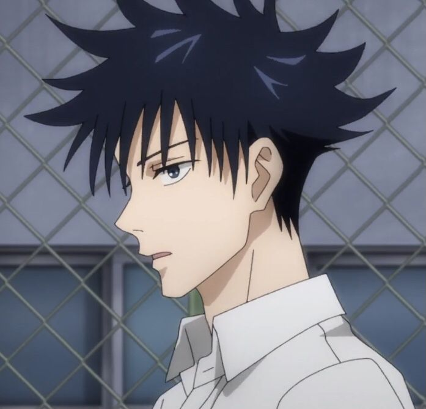
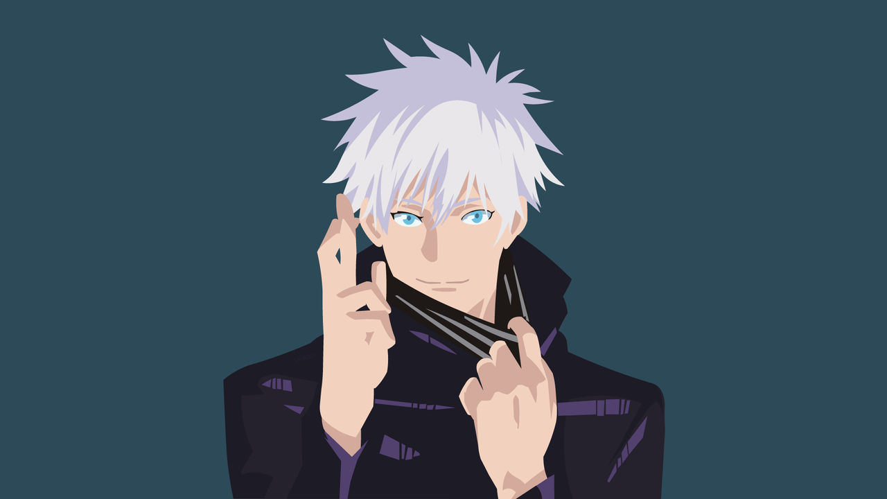
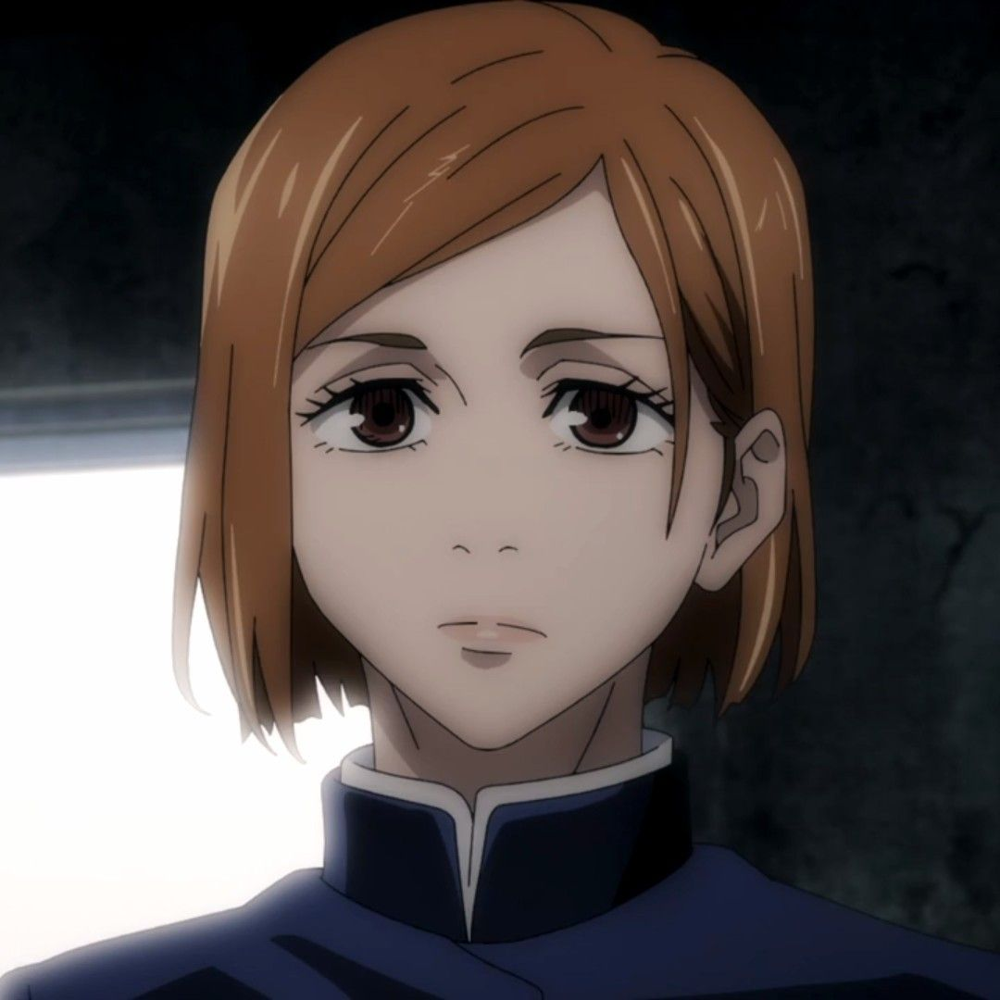

About Yuji
Yuji Itadori is an awesome fighter! He's an anime character in the show Jujutsu Kaisen. Let's learn more about him

Yuji and his friends
Yuji's Characteristics
- He's strong as heck.
- He's an really good friend.
- He never loses hope.
Yuji's Friends
Yuji's friends are all great fighters as well
- Megumi Zenin 
- Gojou Satoru
- Nobara Kugisaki 